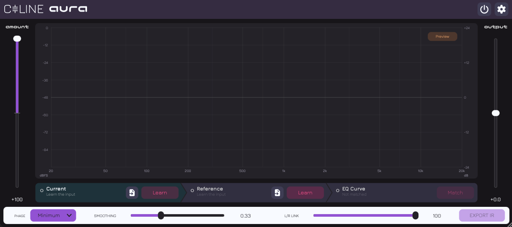

macOS
VST3 · AU · CLAP · LV2
DownloadAURA is a spectrum-matching EQ. It learns the spectrum of your signal and of a reference, and builds the EQ curve that carries one towards the other.

AURA averages the spectrum of what you play it, averages the spectrum of a reference, and works out the correction between the two. The tab bar is those three stages, in order.
The correction can run live inside the plugin, or be written out as an impulse response for any convolver to load. Either way it is the same curve: smoothing, band limits and channel link are already baked in.
The match is spectral, not loudness: since 1.3 the curve no longer tries to make the two the same level, which is what the Output trim is for.
Press Learn and play the track you want to change. AURA averages its spectrum for as long as it listens.
Learn the sound you are aiming for, from what is playing or by loading an audio file straight from disk.
Press Match. The correction is drawn, previewed before it is applied, and marked out of date when either take changes.
A handful of controls, each one shaping the curve rather than the sound directly. All of them are host-automatable.
Learn a take from an audio file instead of from the transport. It is run through the same analysers, so a file and a live take can be matched against each other.
The graph slides up and down, so the top of a loud signal or the bottom of a deep cut is never off the edge. Both scales move together and stay on round gridlines.
The Preview button draws the curve Match would build, in the same orange the Match button wears when it is out of date, so you see what pressing it will do first.
The match follows the shape of the spectrum only, and leaves the level to the Output trim.
A 30 ms crossfade against a copy of the input delayed by the plugin's latency, with the correction kept running underneath so it never resumes with a burst.
Tidier layout and wording, and a round of bug fixes.
Like Céline and GALLERY, every colour in AURA is editable from Theme…
in the settings menu, and a theme saved as a .celthm file loads into any of the three.
Version 1.3.0 · macOS 11 Big Sur or later, Windows, Linux
VST3 · AU · CLAP · LV2
DownloadVST3 · CLAP · LV2
DownloadLV2 · VST3 · CLAP
DownloadGatekeeper and SmartScreen will warn on first run. On macOS, remove the quarantine attribute from each file you install:
xattr -d com.apple.quarantine <file_path>
Provided as-is, with no warranty. AURA makes no guarantee about the accuracy of its analysis or the musicality of the curves it derives.
AURA is free open-source software built on JUCE under its free licence, and is released under the AGPLv3.
AURA contains no AI. AI assistants were used alongside the authors during development; AURA remains the authors' work.